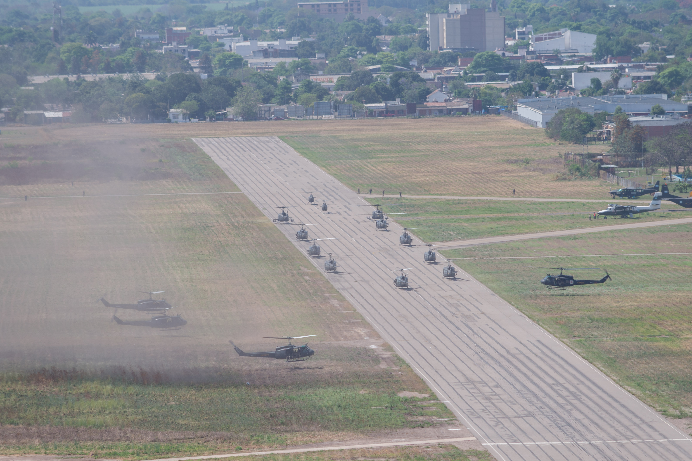

Galería Operacional


Identificación y análisis de la infraestructura crítica en el extremo sur de Argentina: Chubut, Santa Cruz y Tierra del Fuego.
Identificar y analizar la infraestructura crítica en el extremo sur del territorio nacional (provincias de Chubut, Santa Cruz y Tierra del Fuego), evaluando su utilidad para operaciones conjuntas en el nivel operacional.
Infraestructura Crítica Terrestre
Infraestructura Crítica Marítima
Infraestructura Crítica Aérea
Docente responsable
Análisis de rutas, puentes, pasos fronterizos y nodos logísticos críticos.
Puertos, vías navegables y capacidades de proyección marítima estratégica.
Aeropuertos, aeródromos y corredores aéreos clave para soporte de operaciones.
El presente trabajo permitió identificar las infraestructuras críticas desde el punto de análisis de la logística en las provincias de Chubut, Santa Cruz y Tierra del Fuego, aportando una base sólida para la planificación operacional conjunta en el Teatro Sur.
Componente terrestre: la Ruta Nacional 3 constituye el principal eje logístico longitudinal, pero carece de rutas redundantes; la red secundaria necesita mejoras. Los ferrocarriles ofrecen apoyo limitado y los ductos de hidrocarburos, si bien valiosos, son altamente vulnerables.
Componente marítimo: los puertos de Ushuaia, Comodoro Rivadavia, Puerto Madryn, Punta Quilla y Puerto Deseado concentran la mayor capacidad operativa y uso dual. Terminales menores como Rawson y Río Grande cumplen funciones locales pero pueden integrarse como apoyo.
Componente aéreo: las X y IX Brigadas Aéreas, junto a la Base Aeronaval Río Grande, son nodos de proyección clave; muchos aeródromos secundarios requieren ampliaciones en pista, iluminación y servicios, y la cobertura sanitaria militar resulta insuficiente.
Se establecieron criterios de priorización basados en relevancia operacional, accesibilidad, vulnerabilidad estructural y uso dual, orientando la protección y el empleo de estos activos. El trabajo ofrece una línea base actualizada para planificar y sostener operaciones en el Teatro Sur.